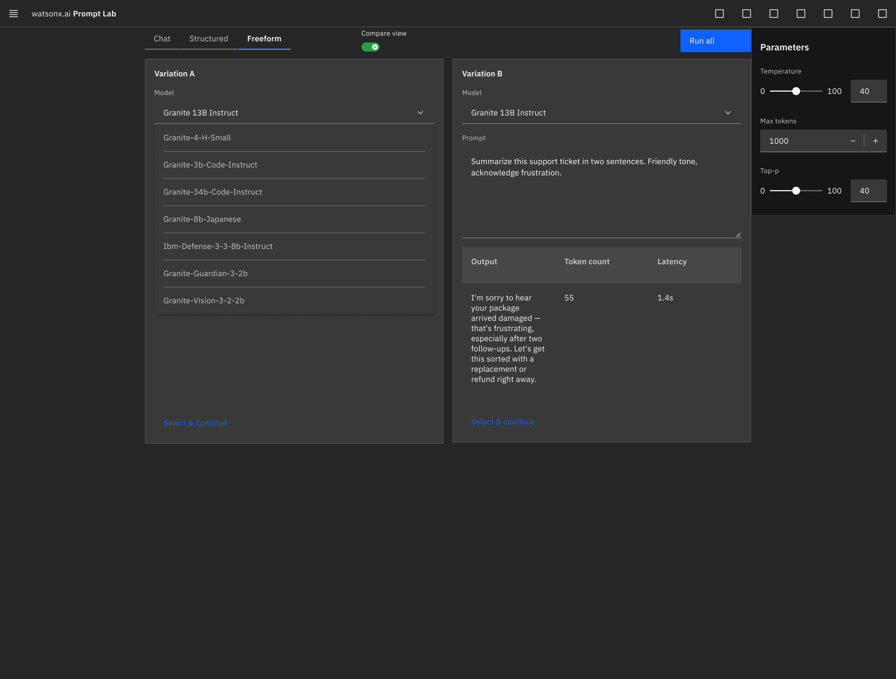

Compare Toggle
Switches the single editor into 2-3 side-by-side panes, elegantly laid out across Carbon's responsive Grid system.
IBM watsonx's Prompt Lab is where teams experiment with generative AI models — writing prompts, adjusting parameters, and reviewing outputs before using a model in production. Currently, the editor supports one prompt, one model, and one pane at a time.
Comparing two approaches — a different phrasing, a different model, a different temperature — means running one variation, noting the result, then overwriting it to run the next. Because there is no persistent side-by-side state, the tool's most common real use case, iterative experimentation, isn't directly supported by its own interface.
Note: The entire concept below is built using only standard components from IBM's Carbon Design System. Composing within an existing system's strict rules is the point of this exercise, not a footnote.
We propose a tabbed comparing framework that splits the single workspace canvas into a responsive grid. This allows users to execute concurrent prompts and compare outcomes side-by-side under identical execution parameters.

Independent model selection per pane, a shared parameter panel via Run All, and execution metrics in a Carbon Data Table.
Switches the single editor into 2-3 side-by-side panes, elegantly laid out across Carbon's responsive Grid system.
A single Button fires every pane together. Global parameters (like temperature) stay shared, ensuring an apples-to-apples comparison.
Each pane's output, token count, and latency sit in a Carbon Data Table directly below its prompt, making them comparable at a glance without extra clicks.
Each pane holds its own prompt editor and filterable model Dropdown, allowing users to test different foundational models simultaneously.
Pick the winning variation and drop back into single-editor mode with the victorious prompt and model parameters already loaded.
Proposing new interfaces within enterprise environments requires careful alignment with existing component libraries rather than creating custom visual patterns. Every element in this concept — Grid, Tabs, Data Table, Side Panel, Dropdown, Button — is an unmodified Carbon component instance.
Manages responsive 2-column or 3-column layouts across desktop screen sizes without breaking the canvas.
Switches viewports seamlessly from single editor workspaces to structured comparison panels.
Formats inline output text, execution latency, and token consumption metrics cleanly.
Slides open to configure temperature and top-p logic — shared across both panes simultaneously.

The Dropdown component acts as the model picker inside each individual prompt editor pane, enabling users to swap foundational models directly from the menu list without navigating away from the workspace.
Working inside someone else's design system, without breaking its rules, is a different skill from freeform design. It is the skill that shows up directly in multi-surface consistency and data-dense enterprise applications.